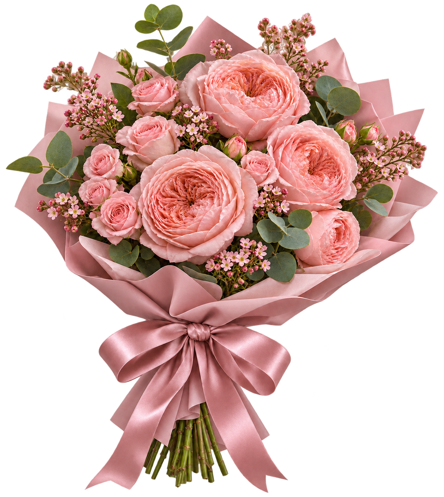
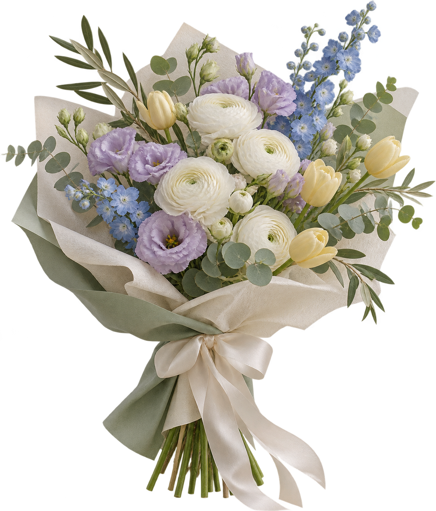
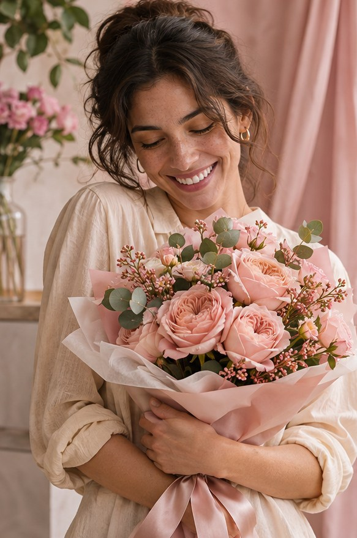
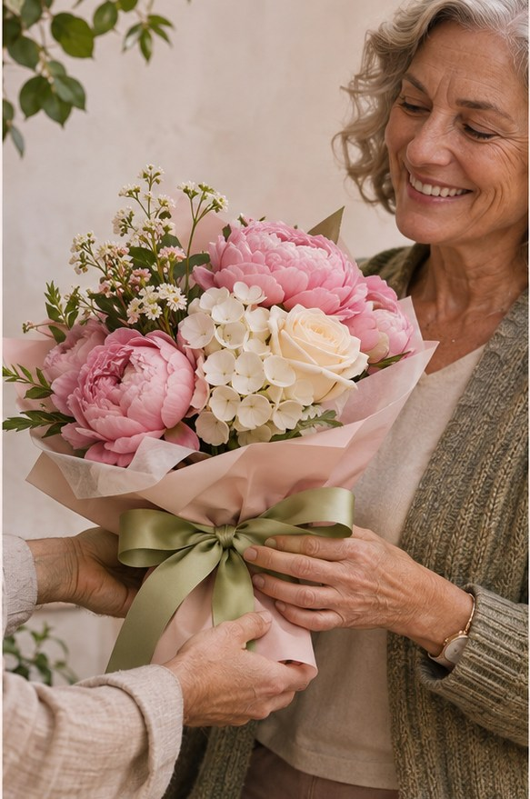
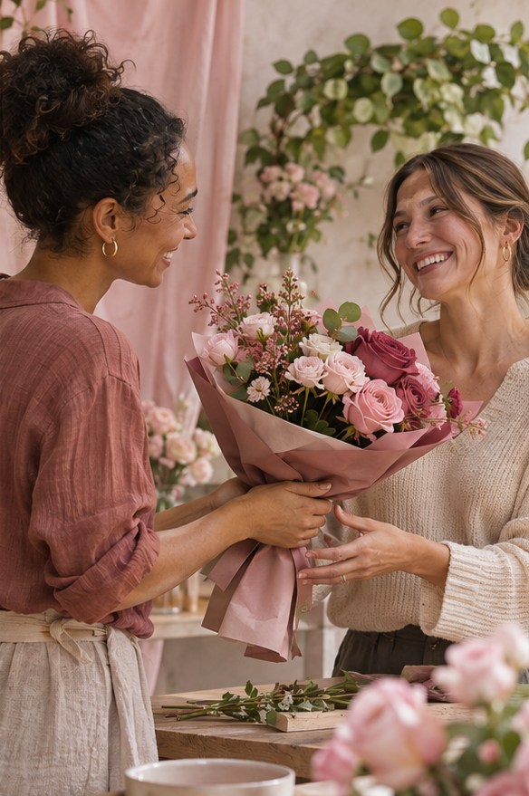
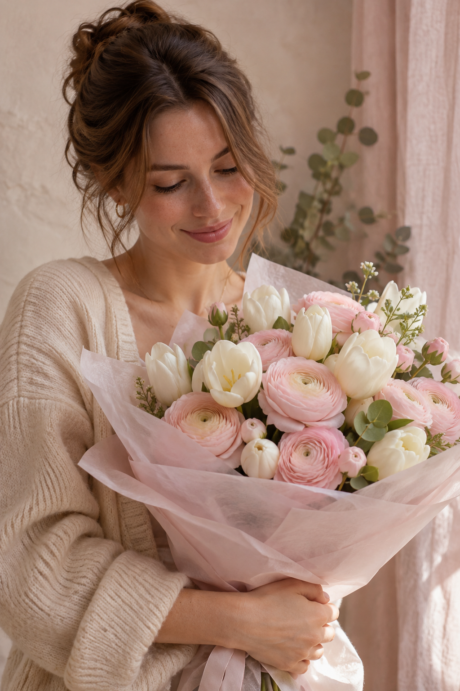
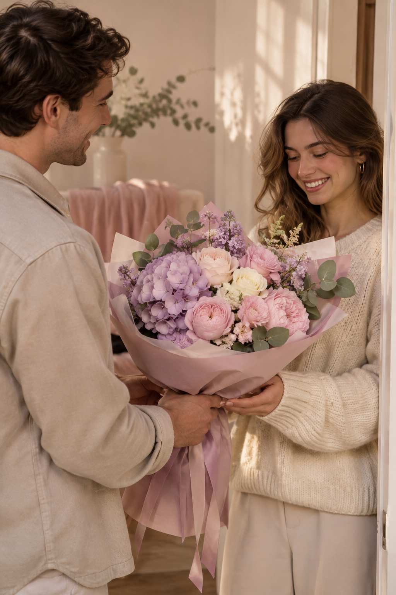
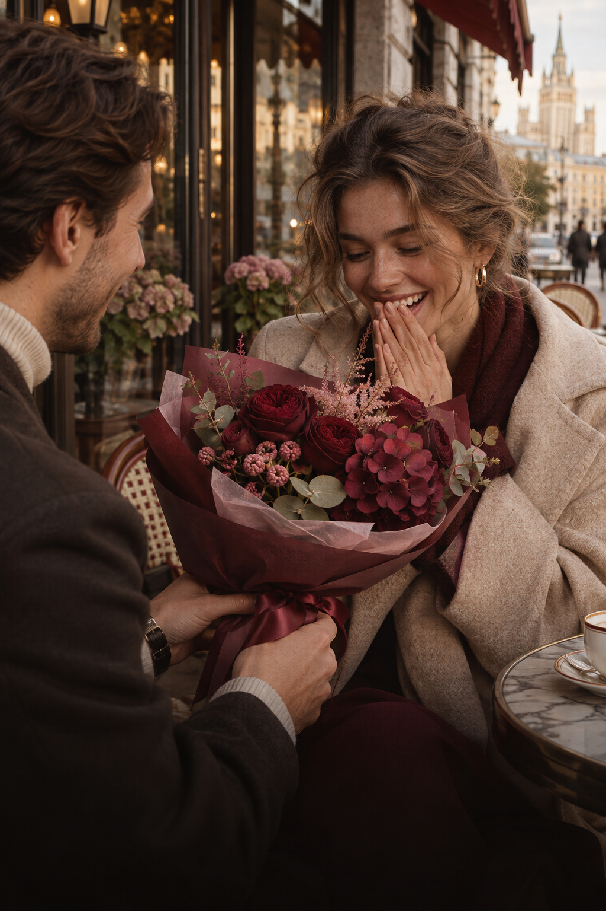
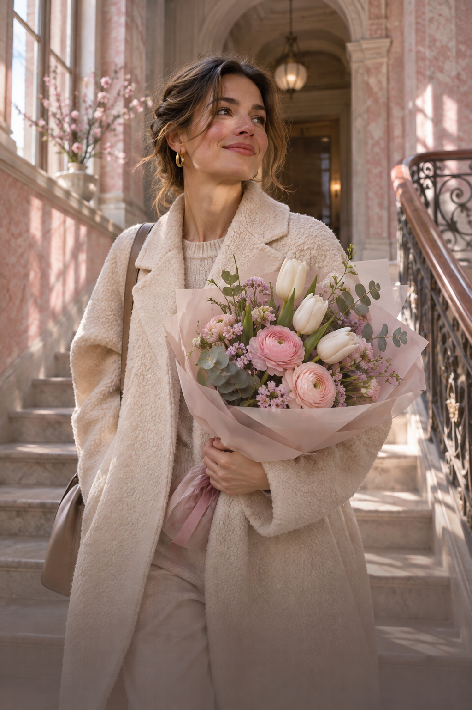
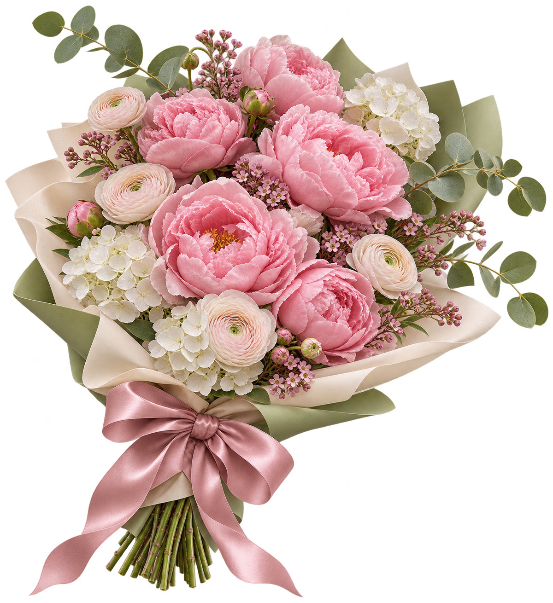

Цветыговорят
Выберите настроение — мы соберём цветы для важного жеста, тёплой встречи или просто хорошего дня.
Выбрать настроениеБукеты с характером
Двенадцать композиций: от лёгких монобукетов до больших авторских сборок. Состав, размер и цена видны до заказа.
Выбрать по настроению
Не нужно знать названия цветов. Начните с того, какое впечатление хотите оставить.
Собираем в день, который важен
Не храним готовые букеты на полке: флорист подбирает свежие стебли под вашу палитру, повод и размер композиции.
- Состав
- Показываем в карточке заранее
- Замена
- Только с сохранением характера букета
- Открытка
- Подпишем без доплаты
Доставка с заботой
Выберите дату и интервал, добавьте открытку и способ связи с получателем — подготовку и бережную передачу возьмём на себя.

Букет остаётся
в памяти
Тёплые слова, которые остаются с нами вместе с ароматом цветов и важными моментами.

★★★★★
«Упаковка выглядит ещё красивее вживую, а открытку подписали очень аккуратно».
Анна · подарок для мамы

★★★★★
«Флорист сохранил нежную палитру и предупредил о каждой замене в составе».
Ирина · весенний букет

★★★★★
«Доставка приехала в выбранный интервал, цветы были свежими и объёмными».
Марина · цветы без повода

★★★★★
«Очень бережная доставка: написали заранее, а букет оказался ещё объёмнее, чем на фото».
София · нежный комплимент

★★★★★
«Заказал сюрприз: команда помогла с текстом открытки и всё приехало точно ко времени».
Даниил · букет для свидания
★★★★★
«Заказ оформила вечером, а утром уже получила бережное сообщение от курьера. Цветы — как на фото, только ещё нежнее».
Елена · сюрприз для сестры

★★★★★
«Угадали с настроением: глубокий винный букет и очень деликатная упаковка. Получательница была в восторге».
Артём · важное свидание

★★★★★
«Попросила сделать композицию лёгкой и весенней — получилось именно то самое ощущение. Спасибо флористу за вкус».
Вера · цветы без повода

Перед заказом
Доставляем ежедневно с 10:00 до 21:00. Точную стоимость доставки покажем после выбора адреса.
Можно ли изменить состав?
Да. Укажите нежелательные цветы в комментарии. Флорист сохранит палитру, размер и характер букета.
Пришлёте фото букета?
По запросу мы отправим фото готовой композиции перед передачей курьеру.
Есть ли анонимная доставка?
Да. Мы не назовём заказчика и не вложим чек в букет.
Что делать, если получатель не отвечает?
Курьер свяжется с заказчиком и согласует повторную попытку.